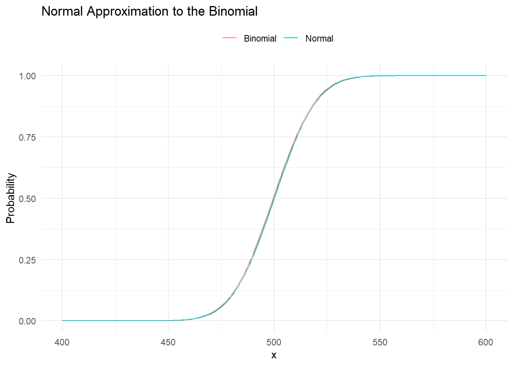

9.2 Regression Trees
A simple regression tree is built in a manner similar to a simple classificatioon tree, and like the simple classification tree, it is rarely invoked on its own; the bagged, random forest, and gradient boosting methods build on this logic. I’ll learn by example again. Using the ISLR::Carseats data set, I will predict Sales using from the 10 feature variables. Load the data.
carseats_dat <- ISLR::Carseats
#skim_with(numeric = list(p0 = NULL, p25 = NULL, p50 = NULL, p75 = NULL,
# p100 = NULL, hist = NULL))
#skim(carseats_dat)I’ll split careseats_dat (n = 400) into carseats_train (80%, n = 321) and carseats_test (20%, n = 79). I’ll fit a simple decision tree with carseats_train, then later a bagged tree, a random forest, and a gradient boosting tree. I’ll compare their predictive performance with carseats_test.
set.seed(12345)
partition <- createDataPartition(y = carseats_dat$Sales, p = 0.8, list = FALSE)
carseats_train <- carseats_dat[partition, ]
carseats_test <- carseats_dat[-partition, ]The first step is to build a full tree, then perform k-fold cross-validation to help select the optimal cost complexity (cp). The only difference here is the rpart() parameter method = "anova" to produce a regression tree.
set.seed(1234)
carseats_model_1 <- rpart(
formula = Sales ~ .,
data = carseats_train,
method = "anova",
xval = 10,
model = TRUE # to plot splits with factor variables.
)
print(carseats_model_1)## n= 321
##
## node), split, n, deviance, yval
## * denotes terminal node
##
## 1) root 321 2567.76800 7.535950
## 2) ShelveLoc=Bad,Medium 251 1474.14100 6.770359
## 4) Price>=105.5 168 719.70630 5.987024
## 8) ShelveLoc=Bad 50 165.70160 4.693600
## 16) Population< 201.5 20 48.35505 3.646500 *
## 17) Population>=201.5 30 80.79922 5.391667 *
## 9) ShelveLoc=Medium 118 434.91370 6.535085
## 18) Advertising< 11.5 88 290.05490 6.113068
## 36) CompPrice< 142 69 193.86340 5.769420
## 72) Price>=132.5 16 50.75440 4.455000 *
## 73) Price< 132.5 53 107.12060 6.166226 *
## 37) CompPrice>=142 19 58.45118 7.361053 *
## 19) Advertising>=11.5 30 83.21323 7.773000 *
## 5) Price< 105.5 83 442.68920 8.355904
## 10) Age>=63.5 32 153.42300 6.922500
## 20) Price>=85 25 66.89398 6.160800
## 40) ShelveLoc=Bad 9 18.39396 4.772222 *
## 41) ShelveLoc=Medium 16 21.38544 6.941875 *
## 21) Price< 85 7 20.22194 9.642857 *
## 11) Age< 63.5 51 182.26350 9.255294
## 22) Income< 57.5 12 28.03042 7.707500 *
## 23) Income>=57.5 39 116.63950 9.731538
## 46) Age>=50.5 14 21.32597 8.451429 *
## 47) Age< 50.5 25 59.52474 10.448400 *
## 3) ShelveLoc=Good 70 418.98290 10.281140
## 6) Price>=107.5 49 242.58730 9.441633
## 12) Advertising< 13.5 41 162.47820 8.926098
## 24) Age>=61 17 53.37051 7.757647 *
## 25) Age< 61 24 69.45776 9.753750 *
## 13) Advertising>=13.5 8 13.36599 12.083750 *
## 7) Price< 107.5 21 61.28200 12.240000 *The output starts with the root node. The predicted Sales at the root is the mean Sales for the training data set, 7.535950 (values are $000s). The deviance at the root is the SSE, 2567.768. The child nodes of node “x” are labeled 2x) and 2x+1), so the child nodes of 1) are 2) and 3), and the child nodes of 2) are 4) and 5). Terminal nodes are labeled with an asterisk (*).
The first split is at ShelveLoc = [Bad, Medium] vs Good. Here is what the full (unpruned) tree looks like.

The boxes show the node predicted value (mean) and the proportion of observations that are in the node (or child nodes).
rpart() not only grew the full tree, it also used cross-validation to test the performance of the possible complexity hyperparameters. printcp() displays the candidate cp values. You can use this table to decide how to prune the tree.
##
## Regression tree:
## rpart(formula = Sales ~ ., data = carseats_train, method = "anova",
## model = TRUE, xval = 10)
##
## Variables actually used in tree construction:
## [1] Advertising Age CompPrice Income Population Price
## [7] ShelveLoc
##
## Root node error: 2567.8/321 = 7.9993
##
## n= 321
##
## CP nsplit rel error xerror xstd
## 1 0.262736 0 1.00000 1.00635 0.076664
## 2 0.121407 1 0.73726 0.74888 0.058981
## 3 0.046379 2 0.61586 0.65278 0.050839
## 4 0.044830 3 0.56948 0.67245 0.051638
## 5 0.041671 4 0.52465 0.66230 0.051065
## 6 0.025993 5 0.48298 0.62345 0.049368
## 7 0.025823 6 0.45698 0.61980 0.048026
## 8 0.024007 7 0.43116 0.62058 0.048213
## 9 0.015441 8 0.40715 0.58061 0.041738
## 10 0.014698 9 0.39171 0.56413 0.041368
## 11 0.014641 10 0.37701 0.56277 0.041271
## 12 0.014233 11 0.36237 0.56081 0.041097
## 13 0.014015 12 0.34814 0.55647 0.038308
## 14 0.013938 13 0.33413 0.55647 0.038308
## 15 0.010560 14 0.32019 0.57110 0.038872
## 16 0.010000 15 0.30963 0.56676 0.038090There are 16 possible cp values in this model. The model with the smallest complexity parameter allows the most splits (nsplit). The highest complexity parameter corresponds to a tree with just a root node. rel error is the SSE relative to the root node. The root node SSE is 2567.76800, so its rel error is 2567.76800/2567.76800 = 1.0. That means the absolute error of the full tree (at CP = 0.01) is 0.30963 * 2567.76800 = 795.058. You can verify that by calculating the SSE of the model predicted values:
data.frame(pred = predict(carseats_model_1, newdata = carseats_train)) %>%
mutate(obs = carseats_train$Sales,
sq_err = (obs - pred)^2) %>%
summarize(sse = sum(sq_err))## sse
## 1 795.0525Finishing the CP table tour, xerror is the cross-validated SSE and xstd is its standard error. If you want the lowest possible error, then prune to the tree with the smallest relative SSE (xerror). If you want to balance predictive power with simplicity, prune to the smallest tree within 1 SE of the one with the smallest relative SSE. The CP table is not super-helpful for finding that tree. I’ll add a column to find it.
carseats_model_1$cptable %>%
data.frame() %>%
mutate(min_xerror_idx = which.min(carseats_model_1$cptable[, "xerror"]),
rownum = row_number(),
xerror_cap = carseats_model_1$cptable[min_xerror_idx, "xerror"] +
carseats_model_1$cptable[min_xerror_idx, "xstd"],
eval = case_when(rownum == min_xerror_idx ~ "min xerror",
xerror < xerror_cap ~ "under cap",
TRUE ~ "")) %>%
select(-rownum, -min_xerror_idx) ## CP nsplit rel.error xerror xstd xerror_cap eval
## 1 0.26273578 0 1.0000000 1.0063530 0.07666355 0.5947744
## 2 0.12140705 1 0.7372642 0.7488767 0.05898146 0.5947744
## 3 0.04637919 2 0.6158572 0.6527823 0.05083938 0.5947744
## 4 0.04483023 3 0.5694780 0.6724529 0.05163819 0.5947744
## 5 0.04167149 4 0.5246478 0.6623028 0.05106530 0.5947744
## 6 0.02599265 5 0.4829763 0.6234457 0.04936799 0.5947744
## 7 0.02582284 6 0.4569836 0.6198034 0.04802643 0.5947744
## 8 0.02400748 7 0.4311608 0.6205756 0.04821332 0.5947744
## 9 0.01544139 8 0.4071533 0.5806072 0.04173785 0.5947744 under cap
## 10 0.01469771 9 0.3917119 0.5641331 0.04136793 0.5947744 under cap
## 11 0.01464055 10 0.3770142 0.5627713 0.04127139 0.5947744 under cap
## 12 0.01423309 11 0.3623736 0.5608073 0.04109662 0.5947744 under cap
## 13 0.01401541 12 0.3481405 0.5564663 0.03830810 0.5947744 min xerror
## 14 0.01393771 13 0.3341251 0.5564663 0.03830810 0.5947744 under cap
## 15 0.01055959 14 0.3201874 0.5710951 0.03887227 0.5947744 under cap
## 16 0.01000000 15 0.3096278 0.5667561 0.03808991 0.5947744 under capOkay, so the simplest tree is the one with CP = 0.01544139 (8 splits). Fortunately, plotcp() presents a nice graphical representation of the relationship between xerror and cp.

The dashed line is set at the minimum xerror + xstd. The top axis shows the number of splits in the tree. I’m not sure why the CP values are not the same as in the table (they are close, but not the same). The smallest relative error is at 0.0140154, but the maximum CP below the dashed line (one standard deviation above the mimimum error) is at CP = .019 (8 splits). Use the prune() function to prune the tree by specifying the associated cost-complexity cp.
carseats_model_1_pruned <- prune(
carseats_model_1,
cp = carseats_model_1$cptable[carseats_model_1$cptable[, 2] == 8, "CP"]
)
rpart.plot(carseats_model_1_pruned, yesno = TRUE)
The most “important” indicator of Sales is ShelveLoc. Here are the importance values from the model.
carseats_model_1_pruned$variable.importance %>%
data.frame() %>%
rownames_to_column(var = "Feature") %>%
rename(Overall = '.') %>%
ggplot(aes(x = fct_reorder(Feature, Overall), y = Overall)) +
geom_pointrange(aes(ymin = 0, ymax = Overall), color = "cadetblue", size = .3) +
theme_minimal() +
coord_flip() +
labs(x = "", y = "", title = "Variable Importance with Simple Regression")
The most important indicator of Sales is ShelveLoc, then Price, then Age, all of which appear in the final model. CompPrice was also important.
The last step is to make predictions on the validation data set. The root mean squared error (\(RMSE = \sqrt{(1/2) \sum{(actual - pred)^2}})\) and mean absolute error (\(MAE = (1/n) \sum{|actual - pred|}\)) are the two most common measures of predictive accuracy. The key difference is that RMSE punishes large errors more harshly. For a regression tree, set argument type = "vector" (or do not specify at all).
carseats_model_1_preds <- predict(
carseats_model_1_pruned,
carseats_test,
type = "vector"
)
carseats_model_1_pruned_rmse <- RMSE(
pred = carseats_model_1_preds,
obs = carseats_test$Sales
)
carseats_model_1_pruned_rmse## [1] 2.388059The pruning process leads to an average prediction error of 2.388 in the test data set. Not too bad considering the standard deviation of Sales is 2.801. Here is a predicted vs actual plot.
plot(carseats_test$Sales, carseats_model_1_preds,
main = "Simple Regression: Predicted vs. Actual",
xlab = "Actual",
ylab = "Predicted")
abline(0, 1)
The 6 possible predicted values do a decent job of binning the observations.
9.2.1 Caret Approach
I can also fit the model with caret::train(), specifying method = "rpart".
I’ll build the model using 10-fold cross-validation to optimize the hyperparameter CP.
carseats_trControl = trainControl(
method = "cv", # k-fold cross validation
number = 10, # 10 folds
savePredictions = "final" # save predictions for the optimal tuning parameter
)I’ll let the model look for the best CP tuning parameter with tuneLength to get close, then fine-tune with tuneGrid.
set.seed(1234)
carseats_model_2 = train(
Sales ~ .,
data = carseats_train,
method = "rpart", # for classification tree
tuneLength = 5, # choose up to 5 combinations of tuning parameters (cp)
metric = "RMSE", # evaluate hyperparamter combinations with RMSE
trControl = carseats_trControl
)## Warning in nominalTrainWorkflow(x = x, y = y, wts = weights, info = trainInfo, :
## There were missing values in resampled performance measures.## CART
##
## 321 samples
## 10 predictor
##
## No pre-processing
## Resampling: Cross-Validated (10 fold)
## Summary of sample sizes: 289, 289, 289, 289, 289, 289, ...
## Resampling results across tuning parameters:
##
## cp RMSE Rsquared MAE
## 0.04167149 2.209383 0.4065251 1.778797
## 0.04483023 2.243618 0.3849728 1.805027
## 0.04637919 2.275563 0.3684309 1.808814
## 0.12140705 2.400455 0.2942663 1.936927
## 0.26273578 2.692867 0.1898998 2.192774
##
## RMSE was used to select the optimal model using the smallest value.
## The final value used for the model was cp = 0.04167149.The first cp (0.04167149) produced the smallest RMSE. I can drill into the best value of cp using a tuning grid. I’ll try that now.
myGrid <- expand.grid(cp = seq(from = 0, to = 0.1, by = 0.01))
carseats_model_3 = train(
Sales ~ .,
data = carseats_train,
method = "rpart", # for classification tree
tuneGrid = myGrid, # choose up to 5 combinations of tuning parameters (cp)
metric = "RMSE", # evaluate hyperparamter combinations with RMSE
trControl = carseats_trControl
)
print(carseats_model_3)## CART
##
## 321 samples
## 10 predictor
##
## No pre-processing
## Resampling: Cross-Validated (10 fold)
## Summary of sample sizes: 289, 289, 289, 289, 288, 289, ...
## Resampling results across tuning parameters:
##
## cp RMSE Rsquared MAE
## 0.00 2.131814 0.4578761 1.725960
## 0.01 2.203111 0.4294647 1.790050
## 0.02 2.240209 0.3948080 1.834786
## 0.03 2.206168 0.4139717 1.762170
## 0.04 2.274313 0.3686176 1.795154
## 0.05 2.309746 0.3405228 1.830556
## 0.06 2.246757 0.3703977 1.780266
## 0.07 2.253725 0.3679986 1.794485
## 0.08 2.253725 0.3679986 1.794485
## 0.09 2.253725 0.3679986 1.794485
## 0.10 2.253725 0.3679986 1.794485
##
## RMSE was used to select the optimal model using the smallest value.
## The final value used for the model was cp = 0.It looks like the best performing tree is the unpruned one.

Lets’s see the final model.

What were the most important variables?

Evaluate the model by making predictions with the test data set.
carseats_model_3_preds <- predict(carseats_model_3, carseats_test, type = "raw")
data.frame(Actual = carseats_test$Sales, Predicted = carseats_model_3_preds) %>%
ggplot(aes(x = Actual, y = Predicted)) +
geom_point() +
geom_smooth() +
geom_abline(slope = 1, intercept = 0) +
scale_y_continuous(limits = c(0, 15)) +
labs(title = "Simple Regression: Predicted vs. Actual")## `geom_smooth()` using method = 'loess' and formula 'y ~ x'
Looks like the model over-estimates at the low end and undestimates at the high end. Calculate the test data set RMSE.
carseats_model_3_pruned_rmse <- RMSE(
pred = carseats_model_3_preds,
obs = carseats_test$Sales
)
carseats_model_3_pruned_rmse## [1] 2.298331Caret faired better in this model. Here is a summary the RMSE values of the two models.
rbind(data.frame(model = "Manual ANOVA",
RMSE = round(carseats_model_1_pruned_rmse, 5)),
data.frame(model = "Caret",
RMSE = round(carseats_model_3_pruned_rmse, 5))
)## model RMSE
## 1 Manual ANOVA 2.38806
## 2 Caret 2.29833